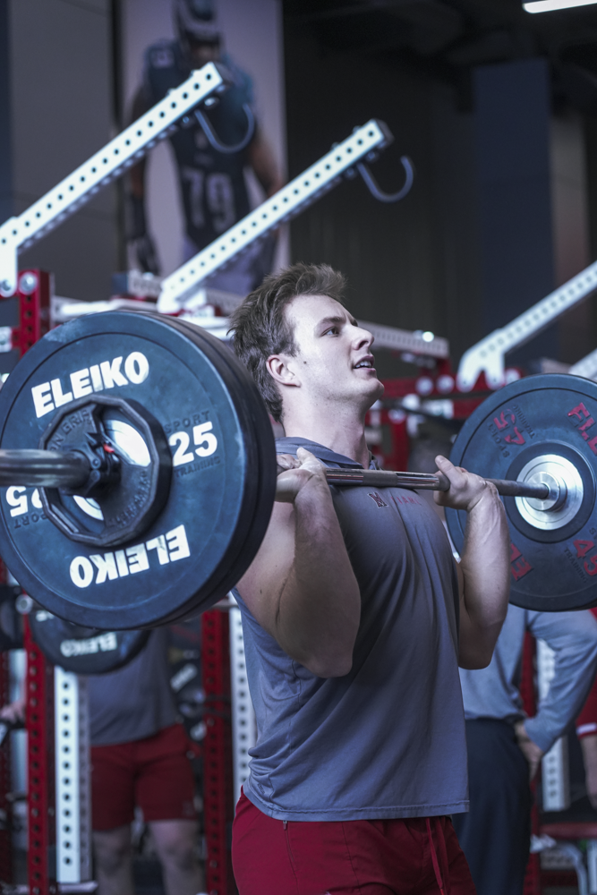
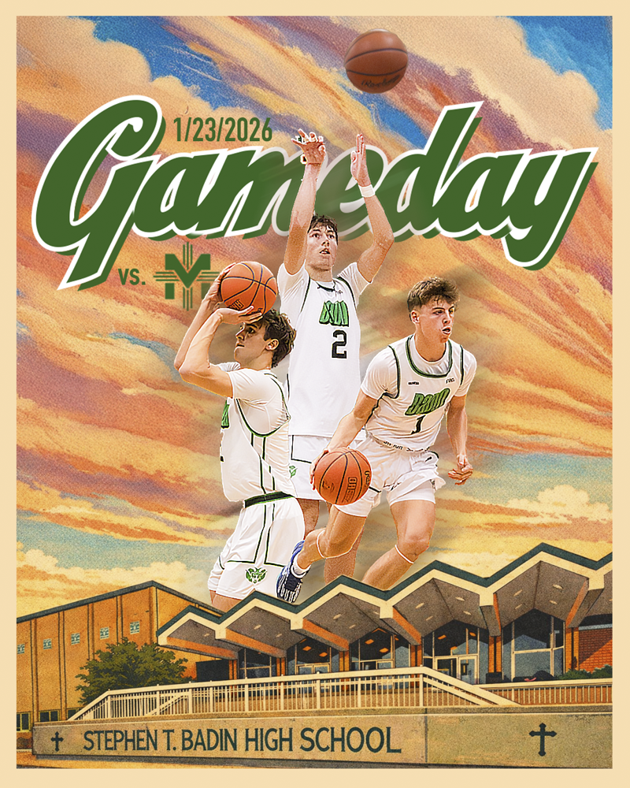
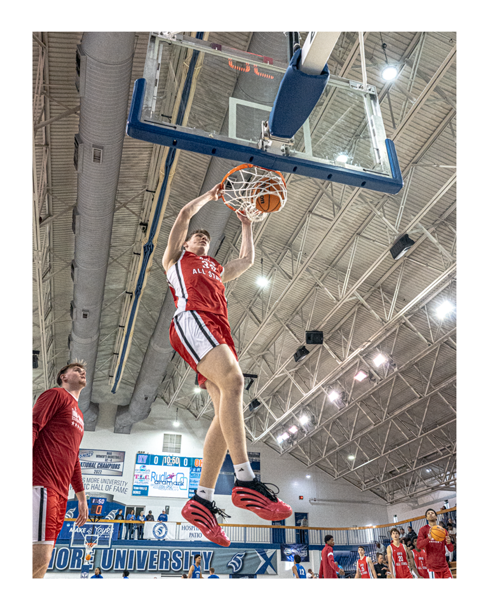
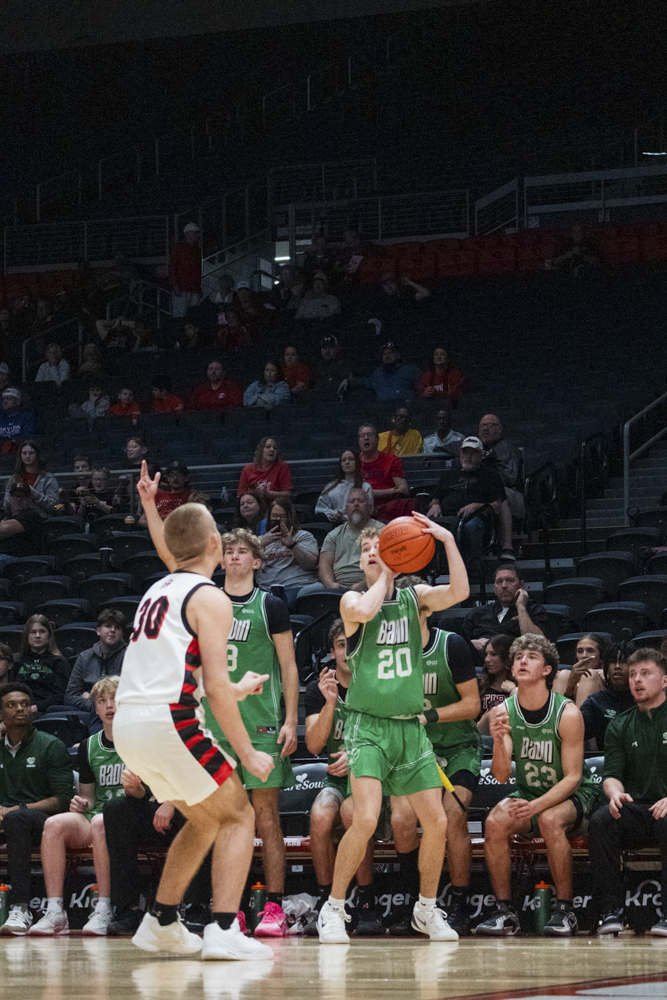

Baseball Action
Sports coverage focused on athlete positioning, clean framing, and game atmosphere.
Photography • Design • Sports Media
Selected Work
This page brings together different parts of my work, from live sports coverage and training visuals to graphic design and promotional content.
My portfolio is built around the idea that sports media should feel intentional, not generic. I want images and graphics to communicate energy, identity, and atmosphere while still looking polished.
That means combining strong composition, emotion, and editing choices with a presentation style that feels professional enough for real clients, teams, and future employers.

Sports coverage focused on athlete positioning, clean framing, and game atmosphere.

Performance visuals that emphasize effort, body mechanics, and intensity.

A cleaner sports media look built around controlled lighting and stronger subject focus.

Portrait work with a more dramatic tone, stronger visual mood, and athlete-centered composition.

Promotional visual content using layered imagery, bold type, and sports branding.

Designed for digital promotion with stronger hierarchy, branding, and social-media appeal.

Clean sports design work combining typography, cutouts, and team identity.

Achievement-based design built for school pride, recognition, and strong visual impact.